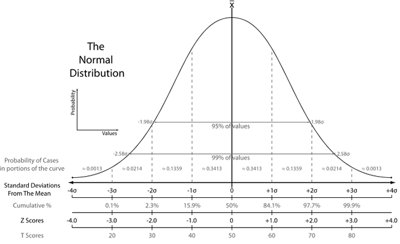

2 Lecture notes
A great resource that you can explore is the This is Statistics website, created by the American Statistical Association. This insightful and motivating campaign has countless links, videos, and resources to raise awareness of the wide variety of fascinating careers within statistics.
2.1 Definitions
The mean (average) of a data set is found by adding all numbers in the data set and then dividing by the number of values in the set. Its highly affected by outliers.
The median is the middle value when a data set is ordered from least to greatest.
The mode is the number that occurs most often in a data set.
Range: the difference between the highest and lowest values.
Interquartile range: the range of the middle half of a distribution. Q3-Q3
Standard deviation: average distance from the mean.
2.2 Standard Score (Empirical Rule)
A bell-shaped or normal distributions is sometimes referred to as the 68-95-99.7 rule: 68% of the population is within 1 standard deviation of the mean. 95% of the population is within 2 standard deviation of the mean. 99.7% of the population is within 3 standard deviation of the mean.
